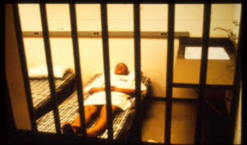
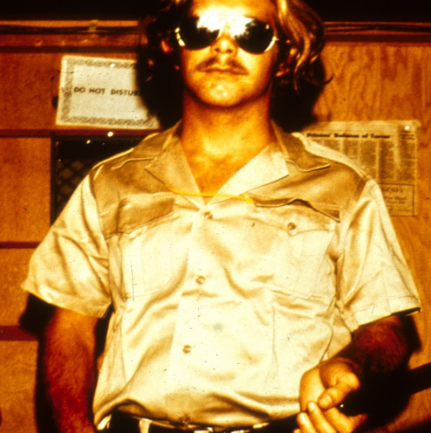

The Stanford Prison experiment took place over 40 years ago on August 15-21st, 1971.
Its original intention was to "Examine the psychological effects of authority and powerlessness in a prison environment."
-Stanford University.
By the end of the experiment, there was another conclusion to gather. This conclusion was that evil can be brought out of an otherwise
a good person simply from the circumstances of his environment, without the individual, even realizing they're doing anything wrong.
The Setting
Stanford University is located in Santa Clara, California. The experiment was expected to run for 1-2 weeks over the summer when school was out. The mock prison the researchers set up was located in the basement of Jordan Hall, a psychology building they had access to. The prison would have no windows, clocks, or anything else that you could identify the outside world with.

The Doctor, and the Incentive
Psychology professor Philip G. Zimbardo, recruited local college students using a local newspaper ad. The ad promised $15 a day in exchange for participating in the two-week study. Adjusting for inflation, $15 in 1971 equates to $94.15. Over the two weeks the experiment was scheduled to run, this equated to over $1300 in today's money. So naturally, these broke little college students chose to participate.
"Over 70 applicants who answered our ad and were given diagnostic interviews,
an extensive battery of psychological tests administered by Craig Haney
and Curt Banks which helped us to eliminate all of those candidates with
any kind of psychological problem, medical disability or history of
crime or drug abuse, until we were left with the final sample of 24
subjects. They were college students from all over the United States
and Canada who happened to be in the Stanford area during the summer
and wanted to earn $15 a day by participating in a psychological study.
On all dimensions that we were able to test or to observe, they reacted
normally." -Dr. Zimbardo, THE STANFORD PRISON EXPERIMENT: A Simulation Study of the Psychology of Imprisonment
conducted August 1971 at Stanford University

The Prisoner Experience
After the participants were approved to participate, the police showed up at their house unannounced, and
arrested them the same way they would any other run of the mill felon. They fingerprinted them and brought them to the mock prison blindfolded, where they would be staying.
After they arrived at the prison they were stripped naked, and deloused. This was done to humiliate them and make them feel insecure. From this point on they were given the "dresses" seen in the image above. They also wore a chain and lock around their ankle that they couldn't remove. This didn't limit their movement, it was just awkward.
They were not allowed to refer to other prisoners by name and only by their number. They had no underclothes.
They had no name. They wore caps, so they didn't even have a hairstyle. This was all done in the attempt to strip them of their personal identity and things that made them feel secure. After this, they were introduced to their cells,
which were shared with two other bunkmates. You may be asking yourself why they did this to the prisoners, and again, it was to humiliate them.

The Guard Experience
The guards are what made this experiment infamous. They lived their role to the extreme. Picture a streyotypical
prison guard now dresses him in full khaki uniform and sunglasses. The sunglasses made it where you couldn't make eye contact, a crucial part in conversing with someone. The uniforms were superior in design to the prisoners,
reinforcing the guards' superior auras. Things only got worse because of how extreme the guards were being,
waking up prisoners at random times in the night to do "counts" (Saying their ID number hundreds of times) and exercises that consisted mainly of push-ups and jumping jacks. These actions were, of course, uncomfortable for the prisoners in their dresses.
"When a prisoner turned over,
the chain \vould hit his other foot, waking him up and reminding him
that he was still in prison, unable to escape even in his dreams."Dr. Zimbardo, THE STANFORD PRISON EXPERIMENT: A Simulation Study of the Psychology of Imprisonment
conducted August 1971 at Stanford University
The guards were not allowed to hit the prisoners; However, hey did have batons.
The Guards also established 17 rules to keep the prisoners up to their standards.
Prison Rules
All of this built an incredibly oppressive, hopeless atmosphere for the prisoners. The guards progressively got more twisted in their ways of showing their authority to the prisoners. Smoking, something that the prisoners were told they would be able to do after meals, was quickly taken away at the guards' discretion.
"The guards could be characterized as falling into one of three groupings.
There were the tough but fair guards whose orders were always within
the prescribed rules of prison operation. Then there were several guards
who were the good guys according to the prisoners, who felt genuinely
sorry for the prisoners, who did little favors for them and never
punished them. And finally, about a third of the guards were extremely
hostile, arbitrary, inventive in their forms of degradation and humiliation, and appeared to thoroughly enjoy the power they wielded when they
put on the guard uniform and stepped out into the yard, big stick in
hand. None of our personality test scores predicted these extreme
differences between the prisoners or guards and their reactions to
imprisonment." The most infamous of the
guards were Dave Eshelman, AKA “John Wayne." He was the most abusive guard in the simulation. Cruel and unusual punishment was pretty much his motto. He made the prisoners do push-ups when they didn't live up to his sadistic standards. He threw the prisoners in a closet called solitary confinement for any reason.

Dave Eshelman
Rebellion
With all the terrible conditions, it didn't take long for some of the prisoners to retaliate. Three of them took their beds and barricaded the cell door with them, keeping the guards out when they tried to get in. The guards quickly used a fire extinguisher and sprayed down the prisoners in their cell. The freezing cold chemicals forced them away from the door. After this they had their beds taken from them, they had their uniforms taken, and they had their meals taken from them.
"The guards again escalated very noticeably their level of harassment, to the point of increasing the humiliation that they made the prisoners suffer, even to cleaning out toilet bowls with their bare hands, having the prisoners do push-ups and increasing the length of the counts to several hours each."
What is real?
Eventually, with the constant stress the prisoners had, they wanted to see a doctor. Dr. Zimbardo feared a doctors reaction to the experiment, so he brought in an experienced prison priest they could talk to about their prison life. Here is his reaction to the prisoners talking with the priest. "He interviewed each of the prisoners individually as I watched in amazement as half the prisoners he spoke to, when he introduced himself, responded by giving their numbers rather than their name."-Dr. Zimbardo
The priest told all the prisoners that the only way they could get out was through a lawyer. He didn't acknowledge that it wasn't real, he simply reinforced the fantasty that they were in. Some people didn't take it very well.
"The only prisoner who did not want to speak to the priest was prisoner #819 who was feeling sick and had refused to eat and wanted to see a doctor, not a priest. He was convinced to come out and talk to the priest and the superintendent so that we could diagnose what his problem was and what kind of a
doctor he needed. While talking to us he broke down and began to cry hysterically, just as had the other two boys we had released with the same symptoms.
I took the chain off his foot, the cap off his head, told him to go and rest in the rest and relaxation room we had adjacent to the prison yard; that I would get him some food and then go with him to see a doctor. While I was doing this one of the guards lined up all of the prisoners and had them chant aloud that prisoner 819 was a bad prisoner.
As soon as I realized that #819 was hearing all this, I raced into the room where I had left him, and what I found
was a boy crying hysterically while in the background his fellow prisoners were yelling and chanting that he was a bad prisoner, that they were being punished because of him? No longer was this a chant or a count,
disorganized and full of fun, as we saw on the first day. It was marked by its conformity, by its compliance,
by its absolute unison. It was as if a single voice was saying, "819 is bad." Or like a million Hitler Jugend chanting "Heil Hitler" in a torchlight rally. Imagine how he felt: I said, "OK, let's leave." Through his tears, he said to me, "No, I can't leave." He could not leave because the others had labeled him a bad prisoner. Even though he was feeling sick, he was willing to go back into that prison to prove that he was not a bad prisoner.
At that point, I said, "Listen, you are not 8l9. My name is Dr. Zimbardo, I am a psychologist, and this is not a prison. This is just an experiment and those are students, just like you. Let's go. " He stopped crying suddenly
and looked up at me just like a small child awakened from a nightmare and said, "OK, let's go." It was also clear
that what I was doing was convincing myself of that statement I had just made." -Dr. Zimbardo, THE STANFORD PRISON EXPERIMENT: A Simulation Study of the Psychology of Imprisonment
conducted August 1971 at Stanford University
Prisoner 819 did a bad thing (May be blocked)
Conclusion
Over the 6 days that the experiment ran, things got worse and worse. Eventually, the prisoners were asked would they give up their earnings if it meant they could leave, and all but two said yes. Here is a point when those in charge realized that they were holding the test subjects against their will. With no reason to want to participate, they may as well of be real prisoners. As well as the prisoners not wanting to participate above all else, Dr. ZImbardo's wife Christina Maslach told Dr. Zimbardo that he needed to end the experiment. They were just young college students, and the guards were hurting them. The Stanford Prison Experiment ended on only day 6 out of its 2 weeks projected run time.
Sources, and further material
Main resource, narration of Dr. Zimbardo's findings.Slideshow of Experiment (Goes with narration).
Stanfords article, where I found resources.